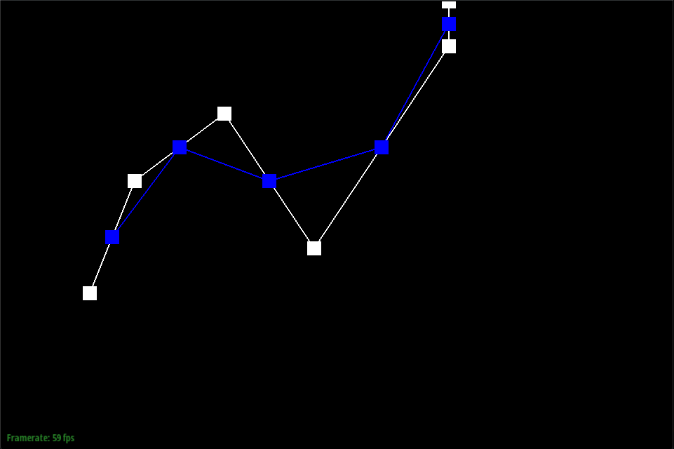

Overview
Give a high-level overview of what you implemented in this project. Think about what you've built as a whole. Share your thoughts on what interesting things you've learned from completing the project.
In this project, it was interesting how 3d models were made up of Bezier Curves, Bezier Surfaces, edges, vertices, half edges, and triangle faces. It’s cool to see how algorithms such as de Casteljau’s algorithm play a big part in the creation of these meshes. It was also cool to see how vertex normals are used for Phong shading. I was already impressed with how I was able to make a teapot using the Bezier Surfaces but seeing it go from a flat to smooth surface was very cool. I also learned that edge flipping and edge flipping play a huge part in mesh upsampling to make it more smooth.
Section I: Bezier Curves and Surfaces
Part 1: Bezier curves with 1D de Casteljau subdivision
De Casteljau’s algorithm is used to find the intermediate points in order to get the Bezier Curve. If we consider two points, A and B, this algorithm multiplies the coordinates of A by 1 - t (t being a parameter) and multiplies the coordinates of B by t. This algorithm is performed recursively to get the final interpolated vector. The implementation that I did only required one step of the algorithm. I implemented it by having a for loop that runs n - 1 times with n being the number of points. Inside of the for loop, I would add the result of the algorithm (1-t)points[i] + (t)points[i+1] to the output vector and return it at the end.
|  | |
Part 2: Bezier surfaces with separable 1D de Casteljau subdivision
Bezier surfaces use the Casteljau algorithm first to give four control points on a single Bezier curve and then use the algorithm again to evaluate a point on the “moving” curve of the four control points. My first step in implementing Bezier surfaces was to evaluate a single step of the de Casteljau algorithm for 3d points. Next, I implemented the function that recursively called the first function to get the control point. Lastly, I implemented the function that first performs de Casteljau using the parameter u to get the control points. I then called the first function on these control points using the parameter v.
Section II: Sampling
Part 3: Average normals for half-edge meshes
I was able to implement area-weighted vertex normals by having a while loop that iterates through neighboring faces. I started with a vector consisting of 0’s. For each iteration, I would add the normal of the current triangle. The while loop would keep running until it returned to the original edge. At the end, I called unit() on the vector with the sum of the normals to get the output.

|
Part 4: Half-edge flip
For this implementation, I had a lot of trouble at first because I had difficulty visualizing the flip. As a result, I was stuck with a lot of pointers that weren’t accounted for. I used a helpful diagram that had the before and after of the flip with all the half edges, vertexes, and edges labeled to aid me in this. Afterwards, the implementation was pretty easy. It was just a matter of setting the half edges for the vertices, edges, and faces and then setting the neighbors for each of the inner half edges.
Part 5: Half-edge split
Edge splitting was a lot more difficult in comparison to edge flipping because there were new edges, half edges, faces, and vertices that needed to be created. I used newVertex, newEdge, newFace, and newHalfedge to create the new elements. After that, I set the neighbors for the half edges and the half edges for all the elements. I calculated the middle vertex by adding up the positions of the vertices on the edges and then dividing by 2.

|
Part 6: Loop subdivision for mesh upsampling
Section III: Optional Extra Credit
If you are not participating in the optional mesh competition, don't worry about this section!